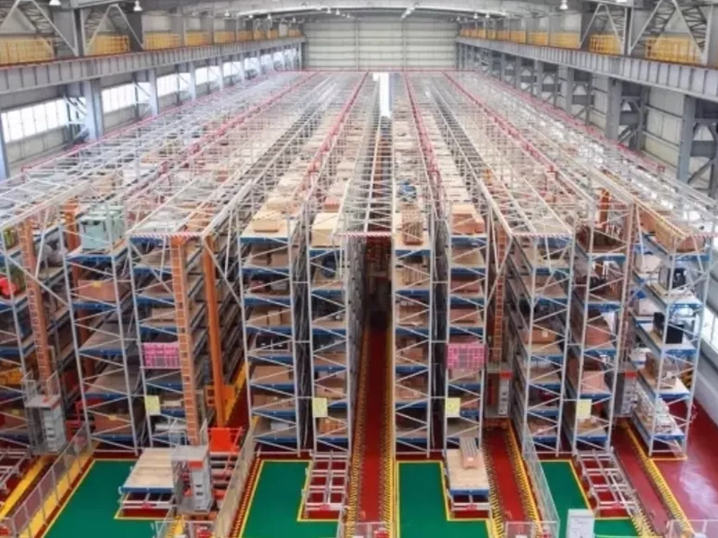

How Much Does a Mini Load ASRS Warehouse Cost? | Investment Guide for High SKU Warehouses
For companies managing thousands of SKUs, investing in a mini load ASRS warehouse is often driven by one critical question: How much automation investment is required, and what business value can it create? A mini load ASRS system combines automated bin storage, stacker cranes, conveyors, software control, and goods-to-person picking stations to improve warehouse efficiency. This article explains the major cost factors of mini load ASRS projects, including: Storage capacity Warehouse size Automation equipment configuration Picking requirements Software integration Installation complexity Understanding these factors helps warehouse owners evaluate whether automation is the right investment strategy for improving capacity, reducing labor dependency, and supporting future growth.

Summary
For companies managing thousands of SKUs, investing in a mini load ASRS warehouse is often driven by one critical question:
How much automation investment is required, and what business value can it create?
A mini load ASRS system combines automated bin storage, stacker cranes, conveyors, software control, and goods-to-person picking stations to improve warehouse efficiency.
This article explains the major cost factors of mini load ASRS projects, including:
Storage capacity
Warehouse size
Automation equipment configuration
Picking requirements
Software integration
Installation complexity
Understanding these factors helps warehouse owners evaluate whether automation is the right investment strategy for improving capacity, reducing labor dependency, and supporting future growth.
Technology
- Mini Load ASRS Investment Structure
- A complete mini load ASRS solution usually includes:
- Automated storage racks
- Mini load stacker cranes
- Storage bins
- Conveyor systems
- Sorting systems
- Goods-to-person picking stations
- WMS/WCS software integration
- The final project cost depends on the level of automation and required throughput.
Challenge
Understanding Automation Investment Before Warehouse Expansion
Many companies face increasing warehouse pressure:
>>Growing SKU Numbers
More products create:
More storage locations
More inventory management complexity
More picking requirements
>>Rising Labor Costs
Manual warehouses require more workers as order volume increases.
>>Limited Warehouse Space
Building additional warehouses requires:
Land investment
Construction costs
Long-term operation expenses
The challenge is determining whether automation can provide better long-term value.
Solution
Evaluating Mini Load ASRS Based on Business Requirements
A successful ASRS investment starts with warehouse analysis.
The solution considers:
Current inventory volume
Future growth forecast
Daily order quantity
Required picking speed
Available warehouse space
Instead of purchasing equipment first, companies should design the warehouse workflow first.
Workflow & Layout
Typical Investment Planning Process:
Business analysis
↓
SKU and storage evaluation
↓
Automation system design
↓
Equipment selection
↓
ROI evaluation
↓
Project implementation
Results & ROI
- A properly designed mini load ASRS system can provide:
- >>Higher Storage Capacity
- Vertical storage maximizes available warehouse space.
- >>Lower Labor Dependency
- Automated retrieval reduces manual handling requirements.
- >>Faster Order Processing
- Goods-to-person picking improves fulfillment speed.
- >>Long-Term Cost Control
- Automation reduces dependency on continuous workforce expansion.
Equipment List
- Mini Load ASRS
- Stacker Crane System
- Storage Rack Structure
- Storage Bins
- Conveyor System
- Sorting Equipment
- Picking Stations
- WMS/WCS Software
Project Overview / Opening
Is Mini Load ASRS Worth the Investment?
For high SKU businesses, warehouse automation is no longer only about technology.
It is about:
Increasing operational capacity
Reducing labor pressure
Improving delivery speed
Supporting business growth
Understanding project cost is the first step before making an automation decision.
Key Points
- Cost depends on capacity, throughput, and automation level
- System design is more important than equipment price
- ROI should consider labor savings and warehouse expansion avoidance
- Mini load ASRS is suitable for high SKU environments
Implementation / Workflow
1.Analyze warehouse requirements
2.Design storage and picking workflow
3.Calculate equipment configuration
4.Evaluate investment return
5.Implement automation project
Customer Value / Results
A professional ASRS investment analysis helps companies:
Avoid unnecessary warehouse expansion
Reduce automation risks
Select suitable technology
Build scalable warehouse infrastructure
Conclusion / Next Step
Mini load ASRS cost should be evaluated as a long-term business investment rather than a simple equipment purchase.
A customized warehouse layout and ROI analysis helps companies identify the right automation strategy.
SEO Title
How Much Does a Mini Load ASRS Warehouse Cost? | Investment Guide for High SKU Warehouses
SEO Description
For companies managing thousands of SKUs, investing in a mini load ASRS warehouse is often driven by one critical question:
How much automation investment is required, and what business value can it create?
A mini load ASRS system combines automated bin storage, stacker cranes, conveyors, software control, and goods-to-person picking stations to improve warehouse efficiency.
This article explains the major cost factors of mini load ASRS projects, including:
Storage capacity
Warehouse size
Automation equipment configuration
Picking requirements
Software integration
Installation complexity
Understanding these factors helps warehouse owners evaluate whether automation is the right investment strategy for improving capacity, reducing labor dependency, and supporting future growth.
Related Blog
Start with Your Business Challenge
Tell us about your warehouse, factory, or production requirements. We'll help you explore practical automation solutions and relevant project references.